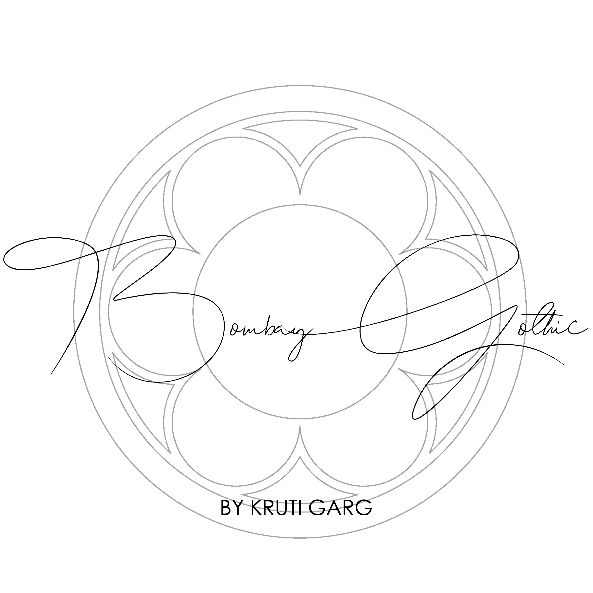

An Ode to Bombay
We believe every building tells a story. Our mission is to capture the architectural soul of the city and bring it into your everyday life.
The Philosophy
Convergence of cultures gave rise to a kind of free-spirited aesthetic which was rooted in cultural mixing and an artistic sensibility... Bombay has always been a melting pot of cultures and its architecture is a manifestation of just that…
Layered in lively and earthy colours, our series of products/ frames reflect the dynamism of Mumbai’s heritage…
Characterized by the Indian craftsman’s preference to elaboration, the Gothic style in the city became richer in detail which makes it unique and exclusive to Bombay – thus the name – Bombay Gothic.
Today’s world is no different than what is was then, at the brink of modernity – sharing common perceptions of fashion with the world... reflecting them in architecture, way of living and societal behaviors… the confluence of these forces created an Indian Neo Gothic style of charm and exuberance…
Today, when modernity is merging with minimalism, eclecticism and bohemianism .. Bombay Gothic is an ode to the past with relevance in the present...
Bombay Gothic was founded in 2021 with the intention to add art to our everyday lives through a series of relatable illustrated cityscapes of Bombay evoking a sense of nostalgia. Created by Conservation architect Kruti Garg, it combines her love for the city and passion for art and cultural heritage.
The Founder
Bombay Gothic was founded in 2021 with the intention to add art to our everyday lives through a series of relatable illustrated cityscapes of Bombay, evoking a sense of nostalgia. Created by Conservation architect Kruti Garg, it combines her love for the city and passion for art and cultural heritage.
Contact Kruti:
Number: 9967064688
E-Mail: bombaygothic@gmail.com